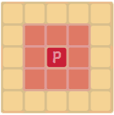
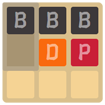

spectating …
In Buffalo Chess, a.k.a. Bison, one player represents Indians who are trying to keep the village from being overrun by buffalo.
This player moves the Indian chief and his dogs while the other player takes charge of the herd of rampaging buffalo, all of which are represented by wooden pieces. Each side has its own style of play as the pieces move differently.
Moving is compulsory; it is illegal to skip a turn, even when having to move is detrimental.
Dog (as 'D') can move any number of vacant squares diagonally, horizontally, or vertically as like Queen in chess.
Player (as 'P') can move exactly one square horizontally, vertically, or diagonally as like King in chess. Player can captured a piece of Buffalo (as 'B') and removed it.
Buffalo (as 'B') can move forward one square, if that square is unoccupied. Its movement is exactly same with as like Pawn in chess.
In this game (not in original boardgame), Buffalo moves automatically after Player or Dog moves.
Close off the load to buffaloes can NOT be arrived the bottom, with moving Player and Dog by removing buffaloes or blocking them.
If all buffaloes can not move, Player Wins
If any of buffalo arrived the bottom, Player Loses